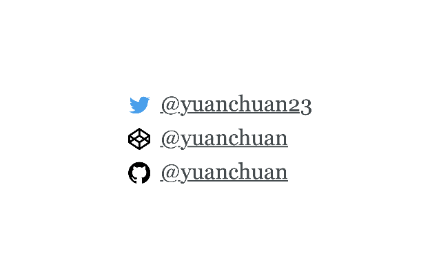
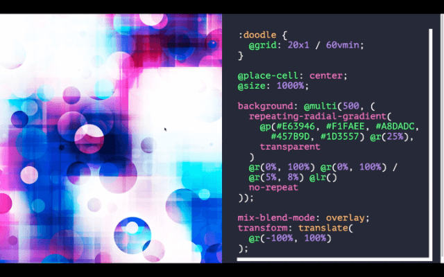
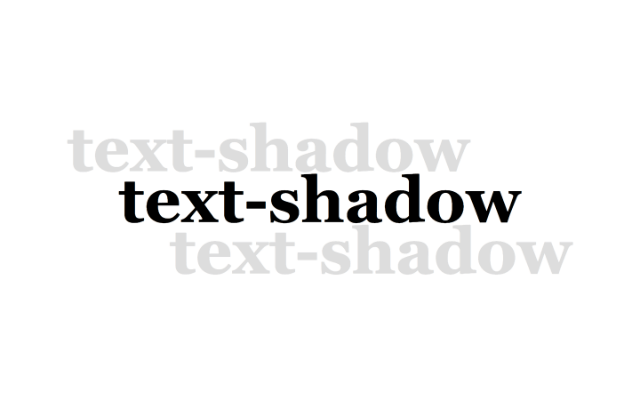

Given at the 5th CSSConf in China
Original video: CSS生成艺术@袁川_CSSConf CN 2019
Talk recap: 「CSS生成艺术」演讲视频出炉
Hello everyone, I’m very happy to be here. This is the first time I’m giving a talk, and might also be the last time I’m speaking at CSSConf in China, so this can be considered a rare opportunity. I’ve written a lot of CSS demos over the past year, I mostly do this during weekends or whenever I can spare some free time.
Before long, it became a habit, I’d start to just code up a few things every evening. If, as luck would have it, I was able to discover something new, then I’d be fairly happy the rest of the night. Today I’d like to share with everyone some of the things I’ve learned along this journey, but be warned, I think most of it isn’t all that practical.
I’m a frontend developer, and I’m mostly active on Twitter and CodePen. I also put up some small projects on Github. So these are links to find me online.
Even though I’m a frontend developer, I usually enjoy browsing design-related or more artistic creations and I like to focus more on the details. There is a lot to be learned from this process of observation, from how these creations express a concept or idea, to how each brush stroke reflects the unique characteristics of the tools that created them.
This is a traditional Chinese painting, and bamboo is a common theme in traditional Chinese painting. Bamboo leaves are extremely challeging to get right, and there are numerous ways you can paint them. Based on the angle which you observe them, they all have different shapes.
Typically, bamboo leaves can be drawn with a single stroke of the brush, while applying varying amounts of pressure at different points of the leaf to obain that blade-shape. It takes a lot of skill to grasp the nuance required for such control.
This is the amazing part of Chinese brush painting. It hinges on the shape and softness of the brush. Painting bamboo leaves with another stiffer implement would not give you this same effect.
Another interesting type of art I’ve come across is sand painting. Sand painting relies on the texture of the sand itself and their interplay with light and shadow. It’s not an easy task to draw a straight line with sand. It is a different form of expression.
There are numerous techniques we have now in CSS that stemmed from dealing the issues of cross-browser support, or attempts to achieve certain complex designs. Even though it was a pain to deal with such issues, it’s pretty exciting if you manage to find a solution.
CSS may be less flexible than Canvas or SVG, and may also be less perfomant at times, but that’s because CSS was not meant for drawing. However, many people do use CSS to create art, myself included, purely for the fun of it.
In order to use CSS to create art, it is neccessary to understand the limits of CSS and what it is capable of. More importantly, you must accept its limits and weaknesses.
Let’s first take a look at lines, as it is a basic element for drawing. There are numerous ways we can draw a line using CSS. But there is actually no concept of a line in CSS, we are merely creating the illusion of a line with other elements or properties.
You can set a height and width on an element, then give it a background colour, to make it look like a line.
Another way is to use any single side of the border property.
You could also make use of the lineargradient() property.
One thing I want to mention is the possibility of using text-decoration on a pseudo-element. You don’t need textual content, just some underscores to control the length of the line, and the thickness can be controlled by font size.
An advantage of this technique is that you can easily draw dashed lines by setting text-decoration-style to dashed.
Speaking of dashed lines, an interesting technique to consider is with text-emphasis, because we are free to determine what characters to use for it, for example, dots or dashes. You can then use letter-spacing to control gap
size.
Using linear-gradient() is also an option because you can make use of the background-repeat property.
But it’s really most straight-forward to use borders.
It has a dashed property built-in, and is the most versatile of all the techniques I’ve covered
Lines with rounded corners can be done with border-radius.
But an issue is that Chrome does not render them well at small pixel sizes, just something to take note of.
If you don’t mind the trouble, you could also use multiple gradients to achieve the same effect.
Moving on to another basic element, which is circles. The web is all boxes, so again, there is no true concept of a circle in CSS.
Drawing a circle requires an element with equal width and height, plus a border-radius of 50%.
By setting different values of each of the 4 corners, you can make this blob-like shape.
Circles can also be drawn with radial-gradient(), but it’s limitation is that the edges of your circle won’t be that smooth.
You could also use a dot, and adjust its size using the font-size property.
I think clip-path is the best bet, because it does have a built-in circle() function. Though if you use clip-path, then you won’t be able to use box-shadow or any borders.
clip-path makes it easy to draw semi-circles or ellipses. And this is what I like most about CSS, that we can use a myriad of techniques to achieve the same effect.
Triangles.
The earliest CSS-only triangles were drawn on elements with no height and width and manipulating their border values to achieve different triangular shapes. I reckon the people who came up with this technique were really smart. I first came across this from a blog post by Yahoo quite early on.
Right-angled triangles can be created fairly simply by manipulating the linear-gradient() property.
But clip-path is the most straight-forward implementation of all, because what are triangles but 3 points on a plane? You just need to plot those 3 points to create the triangle of your choice.
Unicode also provides a large number of shapes, which we can utilise via pseudo-elements in CSS.
For polygons, things are not quite as simple. These mostly would require the use of clip-path.
Let’s take a deeper look at what’s going on here. If we think of a typical cartesian plane, which is made up of an infinite number of discrete x, y coordinate pairs, that’s what the polygon() function in clip-path is making use of to create
different shapes. Here, we can make use of some trigonometric functions to help us figure things out.
At this point, we will need to utilise Javascript, and I think that’s totally fine. Using Javascript to help us generate the requisite values dynamically is a much better approach than manual calculation.
Here we have 3 points, and we are only considering regular polygons for this use case, and we are making use of these 3 points to divide the circumference into 3 parts. Then utilise the trigonometric functions of sine and cosine to calculate the requisite coordinates and plug them back into the function.
This is how it looks with 3 points, 4 points, 5 points, 6 points and so on. These shapes are all generated with clip-path.
When the number of points gets sufficiently large, the polygon essentially becomes a circle.
We can also utilise such mathematical functions to draw different types of curves.
Lissajous curves were investigated during the 19th century, and is relatively well-known.
It is made up of a system of parametric equations and I discovered these curves work really well with clip-path.
The polygon() function can take in an optional fill-rule parameter. Its default value is nonzero, but we can change it to a value of evenodd and when applied to this star-shape, it will clip off the
intersecting sections like so.
And we can make use of such behaviour to generate all kinds of different shapes. When I first realised this was possible, I was very intruigued by the results. Some of these shapes resemble undersea creatures to me, or even creatures from outer space. These are just a small samplling of what is possible with trigonometric functions.
Another technique we can use is by setting the box-shadow property to inset, together with border-radius. Here, we have a crescent-shaped moon.
But if I use elements of varying heights and widths, as well as different border-radius values and box-shadows, we end up with shapes that resemble brush strokes. It is possible to combine multiple brush stroke shapes to achieve your desired effect.
Now, we’ve covered numerous techniques for creating different shapes with CSS. But how can we use these shapes? The simplest method is to just render them as is [❓13.28].
We can also use CSS grid to lay the shapes out. Grid is a 2-dimensional layout system. What we’re trying to achieve here is combine related shapes to form new ones.
CSS is inherently tied to the DOM, so we do need to match the number of elements to the size of the grid we want.
For example, if I wanted a 5x5 grid, I would need 25 elements, then lay them out with CSS grid.

I’m starting off with a simple rule here. Here I have 2 straight lines, rotated 45 deg in the clockwise and anti-clockwise directions. My rule is to randomly select one of those lines and put them in the grid.
Even though this is a simple rule, because adjacent lines could potentially be joined up, we end up with a maze effect. And this is a pattern that has been around for a long time. And we are using CSS to rotate the lines as well.
Another rule I have is for quarter circles. Again, I randomly choose one of these 4 quarter-circles and place them into the grid. Now when the adjacent shapes are combined, we are able to get a variety to interesting patterns. Here I’m using border-radius
to draw these quarter-circles, but you can also use clip-path or radial-gradient() to draw these shapes as well.
Now the next question is, how can we dynamically generate such patterns. Because CSS does not possess the logic necessary to do something like that. I could utilise the concept of a dice, where if the result is 1, I use a particular set of values, if the result is 2, show a different set of values and so on.
But we can also make use of Javascript, and I think it’s inevitable that Javascript is involved.
So I would like to talk a bit about css-doodle. This is a tool I wrote 2 years ago to solve this problem I had, in order to make use of some random functions and other useful things to generate these patterns.
If I were to use css-doodle to generate and draw these shapes, I can dynamically modify these values to create patterns of a different scale, this being an 8x8 grid now.
CSS is very dependent on HTML, and this tool allows me to focus on just the CSS. The rules for this pattern are not too complicated, and this code generates some CSS. The @rand() function has a range of 500ms, if I change the
value to 5000ms, the range will update accordingly from 1ms to 5000ms.
@pick() will randomly pick a value from this matrix. This was inspired from the Logo programming language, not sure if any of you have played with it in the past, as it has a pick function as well.
Let’s take a look at another 5x5 grid.
One of the more interesting grid properties is grid-auto-flow. One of the speakers mentioned this earlier, and what it can do is, if you have some grid items that are of different heights and widths, this property can arrange the grid items
to fill up any empty spaces, where possible. Hence we get an effect like this.
At this point, we can add more elements to the grid, by adding a pseudo-element to every grid item. We can spruce up these pseudo-elements with different background colours, and give them a range of sizes from between 10% and 90%.
Oh, and I forgot to mention something earlier, let’s go back to this slide. This is stuff within the CSS grid, but I’m not sure if any of you have experience with GLSL (OpenGL Shading Language), or shaders in general. If you have, this might be more familiar to you.
And these styles are mapped onto each grid cell, like how shaders are mapped to every pixel [❓18.32], it’s a similar concept, but the performance is probably not as good.
Back here, let’s say I have a pseudo-element like this one, I would apply these styles to each and every grid item to get an effect like the one we see here. This pattern here is just the right amount of complicated. And the effect is quite pretty, making use of the properties in CSS grid.
Now, let’s take a look at Properties. Grid is a very basic technique to generate patterns. You could randomly put stuff into a grid and discover all sorts of unique patterns. It’s a pretty convenient technique.
First up, border-style.
There are lots of values for border-style, these 4 being the most commonly used.
These border styles can be used for decorative purposes.
For example, rotating them with transforms. Basically what I’ve done here is rotate and scale up the patterns from the previous slide.
If you think this is too thick, you can modify the border-width.
Or change the border-color to red and purple, which is kind of ugly right now.
Because the colour is too bright, we can modify the opacity values, just do these randomly.
We can also randomly modify the values on the @grid function. Now we can also use the gap property and give the pattern a bit more breathing room.
There are still improvements to be made to this design. These lines are aligned too neatly, let’s give them a bit more variety with some transforms.
@row() will pass the value of each existing row to every grid cell [❓21.27], if we do something like this, we get a skewed effect.
This results in gaps between the lines so I can use a @sin function, increase the value here, to even things out, and this gives us a better result.
The effect we are seeing here is the result of some random values of border-top and border-left. This pattern here kind of resembles the window patterns found in ancient homes.
Let’s use the dotted value here. This keyboard of mine has issues and will repeat keystrokes sometimes.
This pattern uses border-style: dotted. We can increase the size value here, and we are actually putting the dots on a circular path.
Even though I’m only using 30 divs, it seems like I’m generating a lot more circles than that.
Now, let’s look at border-image. I find that this property is less used. I’ve only started playing around with it last year. Of course, I haven’t managed to dive really deep into it yet.
What I found interesting is that it generates symmetric patterns.
This is the code for the patterns in the previous slide.
Let’s change some values here. Increase the rotation to 10deg makes the effect much thicker.
Just change the values around, it’s up to you, really. We end up with rather nice results.
Or we could also make use of the other possible values for border-image. Here I’ve combined a number of different values and as you can see, there is symmetry in all the resultant patterns.
And then, gradients. I really like gradients in CSS. Because CSS only allows us 2 pseudo-elements, there is no way to generate more.
But with gradients, because there is no limit to how many you can use, we can use them to generate more “elements” in the design.
This is a rather straightforward design. On this single div, we can generate 100 lines, using linear-gradient().
Or maybe circles, with radial-gradient(). Even though I only have 1 div, I can generate unlimited gradients to make up for this short-coming.
Because we can draw many different shapes with gradients, we can apply them all to a single div, and end up with very interesting results.
Another pattern I like makes use of mix-blend-mode. Here I’m using 500 gradients per div. With 20 divs, that makes 10000 gradients.
This is how it originally looks. I merely zoomed in on the pattern.
By the end result of this code has a sci-fi feel to it. I’m not exactly sure of the consituent parts of this design, but just playing around with the different values in the various functions seems to generate very pleasant results.
Here we have a single gradient. Let’s add more gradients to the mix. And apply a background-blend-mode property. This is pretty useful when using multiple gradients. The gradients will blend together, but it’s quite tricky to control the
colours.
If we further increase the number of gradients, this is the end result. But the colours are really hard to control. We’ll just have to experiment then.
This current design is red, but if we change the value to 11, colour is very different.
We can also change the angle of the linear-gradient, give it a range of -60deg to 60deg. It’s just the colour is hard to deal with.
Since colour is the problem, I will make use of the hue-rotate filter to make tweaks, as the colours are not very nice.
Without the filter, it’s a red, blue colour, but with the filter it looks slightly better. This effect is done with multiple conic gradients.
We can make more changes to the function values and end up with a completely different effect. I personally just like how it looks. There are a lot more effects we can achieve with gradients.
This pattern is made up of a combination of lines and dots generated via linear-gradient() and radial-gradient() respectively.
You could also achieve something like this. The lines here are made up of multiple linear gradients, and the shapes are created with clip-path.
Box shadow is one of my favourite properties.
Box shadow and gradients are similar in that there is no limit to the number of shapes you can generate with them. Some people make use of box-shadow to create pixel art.
So this is a relatively small creation, I think it looks rather pretty.
And there isn’t a lot of code involved. It’s the culmination of numerous box shadows, and we can try to add more of them. We can also modify the values in the box-shadow property to adjust the position of the shapes.
Another effect I’m quite fond of is done using box-shadow with filter. There isn’t much code involved here. I’m creating 100 box shadows on this element and applying a filter effect.
If we get rid of the filter, it looks like this.
As we change the values for contrast, the effect starts to morph and change accordingly. Using the value of 5 seems to create the most pleasant end result.
These patterns look like what you would see under a microscope.
text-shadow operates in a similar fashion.
It’s just that we would use this property for text. Because we are making use of text, then we also have the option of using Unicode symbols.
This is what happens if we use the character x.
We can apply different colours and sizes to text-shadow and sort of combine them together like so.
Now, this effect is made entirely with dots. The spread and distribution of the dots are all different, and when combined, we end up with such a design.
This feathery effect is made with parentheses.
Applause
Thank you, everyone.
And you can also experiment with other symbols.
If you are not satisfied with the shape of parentheses, you can modify it with transforms. They originally look like this, but we can apply rotation and skew to end up with such a shape.
And that is how I made this particular design. Applause This sort of looks like some aquatic plants, I suppose. It’s made up of the previously created skewed parentheses and some dots.
We also have text-decoration. [❓29.59] It does resemble the border property in that it too has dots and dashes.
But it also has something called wavy.
Finally we have something curvy to work with, so let’s see how we can make use of it. For now, all I need is to set the value to wavy, and we can adjust the length of the line by changing the value of content.
I’m actually hiding the actual text content, which is a straight line, and displaying the wavy text decoration.
Then, we can rotate multiple wavy lines at equal intervals, like so.
We can also add a perspective value, and you don’t see anything different yet.
But once we apply a rotation transformation, we will end up with something like this. Different values of perspective give us very different end results.
Now because it’s textual content, you can try other Unicode characters like x or o or any other characters for added effects.
Once we throw in some colour, we can get something like this.
And we can also animate the entire thing.
Applause
This animation involves animating the perspective value between 50px and [❓31.52]
Filters is the latest thing that I’m experimenting with. I use SVG filters quite a lot, because they work extremely well with CSS. Even though you may think this is not CSS, I think it doesn’t matter because I can create a lot of things with it.

This is the filter I use most often. It is fairly common, and involves adding noise as a texture.
Here is a conic gradient. Once we add in this filter, the gradient transforms. These parameter values are really fascinating, we only need to tweak them a little bit to get some spectacular effects. You can play around with them yourself as well.
We can also randomise the seed value and end up with a different effect every time.
This is an effect achieved by adding radial gradients to the previous mix. Looks rather pretty.
And by further tweaking the parameter values on the filter, we get something like this. I worked on this a while back, and I had never seen such an effect before, and I think it looks quite nice. It looks like the terrain of an alien planet.
SVG filters can be used to create clouds.
This is not complicated as it only involves the addition of a box-shadow. You can see how it looks like without the filter, but once the filter is applied, we get clouds.
This is also done with box-shadow and SVG filters, specifically inset box shadows. So it appears to expand inward instead.
Here, I’d like to mention animations as well. If we want to animate upwards of hundreds or thousands of elements, it’s going to be quite janky. A handful is fine, but thousands of elements won’t perform well.
This is a demo I made a while back. Even though it looks like there are a lot of dots, maybe a few thousand, in actuality, there are only 50 divs involved. The trick here is to apply gradients to the divs, since gradients are unlimited. Say we apply 100 gradients on each div, with 50 divs that works out to be 5000 dots. And this animation performs quite well. If we do animations and the CPU fan starts spinning up, that’s not really a good sign.
Let’s look at a different example. Even though it seems like there are many lines here, it’s actually just 15 divs.
Here’s how 1 div looks like. Increasing the number of divs gives us such an effect, and each div has 100 lines made with linear gradients. I also discovered that SVG filters work well with animations.
If I apply this filter to the previous animation, we end up with a wave-style [❓36.07] animation.
Tweaking the base-frequency can give us many different effects as well. It’s really up to you. This parameter is quite fascinating.
There is another SVG filter that cannot be found in CSS, which is the Gaussian blur. CSS has a blur filter, but it is directionless. With SVG, we can determine if the filter is horizontal or vertical.
Changing the standard deviation value makes for some interesting effects as well.
And I also want to talk about CSS fractals.
Most designs nowadays use rem values, and use of em values seem to be less common. But I find that em values are interesting because if you have nested elements, for example, an element with 0.5em, then each level
of nested child element [❗️37.23??] is a fraction of the parent before it. Such nested recursion is a good characteristic we can make use of.
CSS is used to manipulate the DOM, which is a tree structure, and we can target nodes with selectors. [❗️37.50??]
This is a simple tree structure. Each element has 2 children nested within it. CSS makes it relatively simple to apply recursive styling without having to write a lot of code.
I've also added some new functionality to css-doodle. Let's add a third-dimension…I apologise, this is an experimental feature, the browser has stalled…
Alright, this is a type of recursive structure. I've added additional styling on each and every element, in this case, I've applied box-shadow. And the dots are made with radial-gradient. The end result is pretty good.
But the performance isn't all that great. This was just an experiment.
The last thing I want to touch on is Houdini, because it presents us with numerous possibilities in the future.
Some of these things have already been mentioned previously so I will just skip over.
The unique thing about custom-defined properties is that you could put any values in there. Even Javascript.
Of course, we could go one step further, by creating our own little language.
Here I have an --L-system, and I've written the logic within the custom property.
Or I could also recreate the Logo programming language style syntax within the custom property. These values are the logic behind my styles. Houdini has been around for quite some time, and I hope everyone who is interested can explore what's possible, and make your own interesting creations.
After a lot of experimentation, you may come to the realisation that a lot of these techniques are comparable, only that CSS properties are a bit special. [❗️41.50??] That you need to learn processing or other tools.
I feel that this is akin to music, where different musical instruments produce sounds of varying musicality, as well as different styles of playing. But what you really need to understand is the nature of music and how to use it to express yourself. That's an important lesson to learn.
I really could go deeper into each topic I mentioned, but because there isn't enough time, I will be wrapping up here. I hope that this talk has inspired you in some way. Thank you very much.